This document lists all classes and functions implemented in PyCppQED. It’s recommended to read the PyCppQED User Guide first and only use the Reference to look up specific classes and methods.
Contents
This module provides an implementation for state vectors.
The StateVector represents a state vector at a specific point of time while the StateVectorTrajectory represents a state vector at different points of time.
Bases: numpy.ndarray
A class representing a quantum mechanical state vector in a specific basis.
>>> sv = StateVector((1, 3, 7, 2), time=0.2, norm=True)
>>> sv = StateVector(numpy.arange(12).reshape(3,4))
>>> print sv
StateVector(3 x 4)
>>> print repr(sv)
StateVector([[ 0, 1, 2, 3],
[ 4, 5, 6, 7],
[ 8, 9, 10, 11]])
Anything that can be used to create a numpy array, e.g. a nested tuple or another numpy array.
A number defining the point of time when this state vector was reached. (Default is 0)
If set True the StateVector will be automatically normalized. (Default is False)
Any other argument that a numpy array takes. E.g. copy=False can be used so that the StateVector shares the data storage with the given numpy array.
Most useful is maybe the tensor product which lets you easily calculate state vectors for combined systems:
>>> sv1 = StateVector((1,2,3))
>>> sv2 = StateVector((3,4,0), norm=True)
>>> sv = sv1 ^ sv2
>>> print sv
StateVector(3 x 3)
>>> print repr(sv)
StateVector([[ 0.6, 0.8, 0. ],
[ 1.2, 1.6, 0. ],
[ 1.8, 2.4, 0. ]])
The tensor product is abbreviated by the “^” operator. But be aware that this operator follows the built-in operator precedence - that means “+”, “*” etc. have higher precedence!
Calculate the expectation value for the given diagonal operator.
>>> a = numpy.arange(4)
>>> print a
array([ 0., 1., 2., 3.])
>>> sv = StateVector((1,2,1,4), norm=True)
>>> print sv.diagexpvalue(a)
2.45454545455
The diagonal elements of a tensor representing an arbitrary diagonal operator in the basis of the StateVector.
Specifies which subsystems should be taken. If None is given the whole system is used.
If multi is True it is assumed that a list of operators is given. (Default is False)
Expectation values for combined systems are calculated in the following way (Assuming the operator only acts on first subsystem):
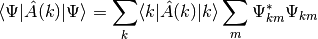
Other than the general expvalue() method diagexpvalue() only works for diagonal operators and only needs the diagonal elements of the matrix representation.
Calculate the expectation value of the given operator.
>>> a = numpy.diag(numpy.ones(3), -1)
>>> print a
array([[ 0., 0., 0., 0.],
[ 1., 0., 0., 0.],
[ 0., 1., 0., 0.],
[ 0., 0., 1., 0.]])
>>> sv = StateVector((1,2,1,2), norm=True)
>>> print sv.expvalue(a)
0.6
A tensor representing an arbitrary operator in the basis of the StateVector.
Specifies which subsystems should be taken. If None is given the whole system is used.
If multi is True it is assumed that a list of operators is given. (Default is False)
Expectation values for combined systems are calculated in the following way (Assuming the operator only acts on first subsystem):
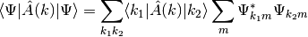
The second sum is exactly what reducesquare() does while the first expression is the matrix representation of the given operator in the same basis as the StateVector.
Return a StateVector where the given axes are Fourier transformed. This is the transformation position space -> momentum space.
>>> sv = StateVector((0,1,1.7,2,1.7,1,0), norm=True)
>>> print sv.fft()
StateVector(7)
Sequence of ints, axes over which the fft is done. (Default is all)
Return a StateVector where the given axes are inversely Fourier transformed. This is the transformation momentum space -> position space.
See StateVector.fft() for details.
Calculate the norm of the StateVector.
>>> sv = StateVector((1,2,3,4,5), norm=True)
>>> print sv.norm()
1.0
Return a normalized StateVector.
>>> sv = StateVector((1,2,1,3,1))
>>> print sv.norm()
4.0
>>> nsv = sv.normalize()
>>> print nsv.norm()
1.0
Return the outer product between this and the given StateVector.
>>> sv = StateVector((0,1,2), norm=True)
>>> print repr(sv.outer(StateVector((3,4), norm=True)))
StateVector([[ 0. , 0. ],
[ 0.26832816, 0.35777088],
[ 0.53665631, 0.71554175]])
>>> print sv.outer((3,4)) # Not normalized!
StateVector([[ 0. , 0. ],
[ 1.34164079, 1.78885438],
[ 2.68328157, 3.57770876]])
Some kind of array (E.g. StateVector, numpy.array, list, ...).
As abbreviation sv1^sv2 can be written instead of sv1.outer(sv2). But be aware that the operator precedence of ^ follows the python rules - that means sv1 ^ sv2 + sv3 is the same as sv1 ^ (sv2 + sv3).
Return a StateVector where the given indices are reduced.
>>> rsv = sv.reduce(1)
>>> rsv = sv.reduce((1,2))
An integer or a list of integers specifying over which subspaces should be summated.
If set True the resulting StateVector will be renormalized.
Reducing means nothing else then summing up over all given indices. E.g. a StateVector of rank 4 can be reduced to the first two indices:
>>> sv1 = StateVector((1,2), norm=True)
>>> sv2 = StateVector((1,2,3), norm=True)
>>> sv3 = StateVector((1,2,3,4,5), norm=True)
>>> sv4 = StateVector((1,2,3,4,5,6), norm=True)
>>> sv = sv1^sv2^sv3^sv4
>>> print sv
StateVector(2 x 3 x 5 x 6)
>>> print sv.reduce((2,3))
StateVector(2 x 3)
This is mathematically equivalent to:
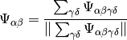
Reducing is an easy way to find out how subspaces of a high rank state vectors behave. Don’t use reduced StateVectors for calculating expectation values - this will most likely give wrong answers!
Calculate the reduced Psi-square tensor.
>>> sv1 = StateVector((0,1,2,1,0), norm=True)
>>> sv2 = StateVector((1,0,1), norm=True)
>>> sv = sv1^sv2
>>> sqtensor = sv.reducesquare(1)
An integer or a list of integers specifying over which subsystems should be summed up.
This method calculates the following quantity (simplified for rank 2 state vectors):
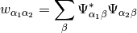
Where 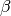 is the reduced index.
This quantity is useful to calculate expectation values in the corresponding subspaces.
Bases: numpy.ndarray
A class holding StateVectors for different points of time.
>>> import numpy as np
>>> X = np.linspace(-0.5, 0.5, 100)
>>> svs = [pycppqed.gaussian(x) for x in X]
>>> svtraj = StateVectorTrajectory(svs)
>>> print svtraj
StateVectorTrajectory(100 x (64))
Some nested structure which holds state vector like arrays for different points of time.
An array which specifies the point of time for every state vector. This array must have as many entries as there are state vectors.
Any other argument that a numpy array takes. E.g. copy=False can be used so that the StateVectorTrajectory shares the data storage with the given numpy array.
Most methods are simple mapped to all single StateVectors. For more documentation regarding these methods look into the docstrings of the corresponding StateVector methods.
Create an interactive animation of this StateVectorTrajectory.
For more information look into the docstring of pycppqed.animation.animate_statevector().
Calculate the expectation value of the diagonal operator for all SVs.
See also: StateVector.diagexpvalue()
Calculate the expectation value of the operator for all StateVectors.
See also: StateVector.expvalue()
Return a StateVectorTrajectory whith Fourier transformed StateVectors.
See also: StateVector.fft()
Apply the given function to every single StateVector.
>>> norm = svt.map(lambda sv:sv.norm())
Function that takes a StateVector as argument.
If svt is True, the return value will be an instance of StateVectorTrajectory.
Return a list of norms for every single StateVector.
See also: StateVector.norm()
Return a StateVectorTrajectory where all StateVectors are normalized.
See also: StateVector.normalize()
Return a StateVectorTrajectory where all StateVectors are reduced.
See also: StateVector.reduce()
Adjust the dimensionality of a 1D array.
Return the norm of the array.
Return a normalized array.
This module provides classes for working with expectation values.
The ExpectationValueTrajectory stores one expectation value at different points of time while the ExpectationValueCollection stores several expectation values at different points of time.
Bases: numpy.ndarray
A class representing several expectation values at different points of time.
>>> import numpy as np
>>> T = np.linspace(0,10)
>>> X = np.sin(T)
>>> Y = np.cos(T)
>>> ev = ExpectationValueTrajectoryCollection((X,Y), T, ("<x>", "<y>"))
A list of 1D arrays or some similar data structure.
A 1d array or list specifying the points of time.
A list of names for the expectation values. (The names can be any unicode string)
Dictionary specifying subsystems. E.g. {"Mode1" : (1,3)}.
Any other argument that a numpy array can use for creation. E.g. copy = False can be used so that the ExpectationValueCollection shares the data storage with the given numpy array.
Return a list of titles of the holded ExpectationValueTrajectories.
Unknown titles are represented by ”?”.
Bases: numpy.ndarray
A class representing one expectation value at different points of time.
>>> T = numpy.linspace(0,10)
>>> X = numpy.sin(T)
>>> ev = ExpectationValueTrajectory(X, T, "<x>")
A 1d array or similar data structure representing an expectation value at different points of time.
A 1d array or list specifying the points of time.
The name of the expectation value. (Can be any unicode string)
Any other argument that a numpy array can use for creation. E.g. copy = False can be used so that the ExpectationValueTrajecory shares the data storage with the given numpy array.
This module provides functions to read and write C++QED files.
Load a C++QED output file from the given location.
>>> evs, svs = load_cppqed("ring.dat")
Path to the C++QED output file that should be loaded.
A pycppqed.expvalues.ExpectationValueCollection holding all expectation values.
A pycppqed.statevector.StateVectorTrajectory holding all state vectors and information about the calculated system.
Load a C++QED state vector file from the given location.
>>> sv = load_statevector("ring.sv")
Path to the C++QED state vector file that should be loaded. If the filename ends with .svbin, the state vector file is expected to be a binary file and a IOError is raised if the required ciobin module is not available.
A pycppqed.statevector.StateVector instance.
Save a C++QED state vector to the given location.
>>> sv = StateVector((1,2,3), time=1.5)
>>> save_statevector("my_statevector.sv", sv)
Split a C++QED output file into default part and state vectors.
>>> split_cppqed("ring.dat", "r.dat")
Path to the C++QED output file that should be split up.
Path where the output should be saved to.
If True a header line of the form # {time} {next_time_step} is written. (Default is True)
The standard part of the C++QED output file is saved to the given path, while the state vectors are saved to the same directory with the naming convention {path}_{time}.sv.
This module provides convenient methods for creating initial conditions.
Generate a coherent StateVector in the Fock space.
>>> sv = coherent(alpha=2, N=20)
>>> print sv
StateVector(20)
A complex number specifying the coherent state. (Default is 2)
A number determining the dimension of the Fock space. (Default is 20)
The coherent state is given by the formula:
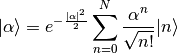
Calculation is done using the recursive formula:
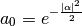
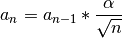
Generate a Fock space basis vector.
>>> sv = fock(dim=8, i=4)
>>> print sv
StateVector(8)
Dimension of the Fock space.
Genereate the i-th basis vector
Generate a StateVector with a normal distribution.
>>> sv = gaussian(x0=0.3, k0=4, sigma=0.6, fin=7)
>>> print sv
StateVector(128)
Center in the real space.
Center in the k-space.
Width in the real space 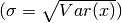.
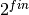 determines the amount of sample points.
if true, sigma is interpreted as width of the wavepacket in k-space
C++QED compatibility flag, if set to true then x0 (but not sigma) is expected in units of Pi.
A pycppqed.statevector.StateVector representing this gaussian wave packet in the k-space.
The generated StateVector is normalized and given in the k-space. It is the discretized and Fourier transformed of the following expression:
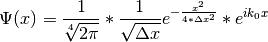
The discretization is given by:
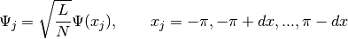
Generate a momentum eigenstate with momentum p in a space with finesse fin.
>>> sv = momentum_eigen(0, fin=4)
>>> print sv
StateVector(16)
Wavenumber of the resulting state.
Finesse of the resulting state (default 4).